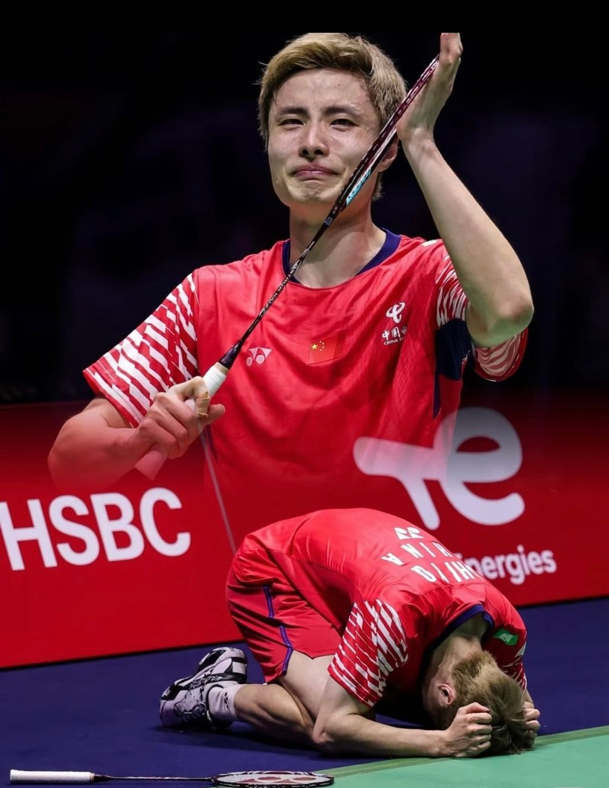

THE STORY
人物故事
这不是一个天才一路赢下去的故事。它更像一场漫长的拉锯：先被对手拖住，再被伤病拖住，最后被自己拖住。石宇奇学会的，是在多拍之后仍然相信下一拍。

南通起点
1996 年 2 月 28 日，石宇奇出生在江苏南通。5 岁那年，他被少儿体校的羽毛球教练选中。2007 年，他进入江苏省队，孙俊成为他的主管教练。
少年时期的他并不是一眼惊艳的类型。2012 年起，他连续参加三届亚青赛、两届世青赛，因为体能问题，成绩并没有达到自己的期待。但那些被拖入决胜局的比赛，也在慢慢教会他如何与疲惫相处。
2014 年，他在南京青奥会男单决赛中 2 比 0 战胜林贵埔，拿到冠军。那是他第一次让外界记住自己的名字。
少年成名
2016 年，石宇奇在法国公开赛夺得职业生涯第一个超级赛冠军。2018 年 3 月，他在全英公开赛决赛中 2 比 1 击败林丹，第一次站到世界羽坛的中心。
同年，他闯进南京世锦赛决赛，但输给桃田贤斗，获得亚军。年底的世界巡回赛总决赛，他 2 比 0 击败桃田贤斗夺冠。2019 年苏迪曼杯决赛，他又一次战胜桃田贤斗，帮助中国队夺冠。
那时候的他，像一个正在加速上升的箭头。直到伤病出现。
低谷与归来
2019 年 7 月，石宇奇在印尼公开赛因脚伤退赛。回国后，他被确诊为左脚踝侧副韧带撕裂，接受手术，并退出世锦赛。那是他职业生涯第一次被强行按下暂停键。
2021 年东京奥运会，他止步八强；2022 年，他经历了一段远离国际赛场的沉淀期。复出之后，他在丹麦公开赛和澳大利亚公开赛拿到冠军，世界排名一点点往回爬。
2024 年，他六战全胜帮助中国队重夺汤姆斯杯，随后拿下印度、法国、新加坡、印尼四站公开赛冠军，并在世界巡回赛总决赛登顶，世界排名来到第一。
然后，是巴黎奥运会。男单四分之一决赛，他 0 比 2 不敌昆拉武特，止步八强。那场比赛，成了他后来必须面对的一道坎。
巴黎加冕
2025 年，石宇奇重新开始。他连夺马来西亚、全英、日本、中国四站公开赛冠军，完成四大超级 1000 赛男单大满贯，成为首位做到这一点的国羽单打选手。
8 月 31 日，巴黎世锦赛男单决赛，对面是一年前在同一座场馆击败他的昆拉武特。首局 19 比 21 丢掉，第二局 21 比 10，决胜局 21 比 18。最后一球落地，他跪在地上，哭了。
中国男单时隔十年，再次站上世锦赛之巅。七年前在南京拿到银牌的年轻人，终于在巴黎把奖牌换成了金色。
“在场上想办法，每个球头脑都在高速运转，可能效果也不好，但就是得去尝试。” —— 石宇奇，2025 年
继续上场
29 岁，三次手术。身体机能并不如很多同年龄运动员，杀手锏“斜线劈杀”又对体能和状态要求极高。为了延长职业生涯，石宇奇在场下更加自律：赛前热身和赛后放松，都比别人用时更久。
2025 年 12 月，他当选世界羽联年度最佳男子单打运动员，并获年度最具人气男运动员。石宇奇终究拾羽旗！
赛场之外，2026年11月1日，石宇奇与主播姜丹举行婚礼，一同翻开属于他们的人生新篇章。
故事没有结束。下一拍，仍在路上。